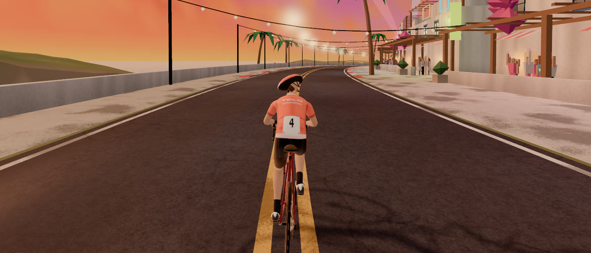

Content
- “3”, “2”, “1”, “Go!”. Always the exclamation mark; never “Start” or “GO”.
- The one line is fixed: “The plan sets your resistance. Just pedal.”
- No light carries meaning by colour alone: the numeral and “Go!” say the same in text.
Component · The shape of a ride
The three seconds before the clock starts: three lights, a numeral, “Go!” and one line, over the video’s or the course’s box.
Every ride begins with the countdown (L2-180): “3, 2, 1, Go!”, a second each, drawn inside the box that holds the class video or the course, above the bike panel. The clock starts at 0:00 on “Go!”.
It is for one rider alone: no start grid, no other riders. Use it only at the start of a ride. It replaces the race lobby’s 3-2-1 this page documented for Telo Ride.

The plan sets your resistance. Just pedal.
The class starts in 3 seconds
--color-scrim-photo (60% ink, the same in both themes) over the whole box, so the numeral reads on any frame of the video or the course. It takes no pointer input.--color-on-photo; “Go!” in the accent. Each numeral is a fresh node, so its step animation replays.role="status": “The class starts in 3 seconds”, then “Go”.
The plan sets your resistance. Just pedal.
The class starts in 3 seconds
.class-video).The plan sets your resistance. Just pedal.
The class starts in 3 seconds
.class-course), in a ride in Ibiza.One size; the numeral and the lights step with the window (see Responsive).
| 3 | 2 | 1 | Go! | |
|---|---|---|---|---|
| Lights and numeral |
The plan sets your resistance. Just pedal.
Go
.class-countdown--go). The clock reads 0:00.The countdown lies on a picture, so it reads the on-photo colours, which are the same in both themes: --color-on-photo on --color-scrim-photo and --color-scrim-strong. A lit light is --color-heart; “Go!” is --color-volt.
Not a dialog and not a timer: the lights and the numeral are aria-hidden, and one role="status" line speaks for them.
None: the countdown cannot be skipped or paused. Leave, in the header, still works.
Focus stays where it was (the header’s controls). Nothing in the countdown can be focused.
The status says “The class starts in 3 seconds” once, then “Go”. It does not read every numeral: three announcements in three seconds would talk over each other.
Each numeral scales in from 125% over --duration-base with --ease-enter. With reduced motion it only fades (ride-countdown-fade); the lights change without a transition.
It takes no touches (pointer-events: none): Pause and Leave in the header stay in reach.
The plan sets your resistance. Just pedal.
The class starts in 3 seconds
A numeral over the whole screen, covering the header and the bike panel.
Three green lights and no word.
| Used by | Token | Light | Dark |
|---|---|---|---|
| light--on | --color-heart | ||
| light, num, line | --color-on-photo | ||
| the block | --color-scrim-photo | ||
| lights, line | --color-scrim-strong | ||
| --go, light, num | --color-volt | ||
| num | --palette-ink | ||
| num | --duration-base | ||
| light | --duration-fast | ||
| num | --ease-enter | ||
| light | --ease-out | ||
| num | --font-size-7xl | ||
| num | --font-size-score | ||
| num | --font-size-score-lg | ||
| line | --font-size-sm | ||
| line | --font-weight-medium | ||
| line | --line-height-sm | ||
| light | --radius-full | ||
| line | --radius-lg | ||
| lights | --radius-xl | ||
| num | --space-1 | ||
| line | --space-1-5 | ||
| body, lights | --space-2 | ||
| lights, line | --space-3 | ||
| light | --space-6 | ||
| light | --space-9 | ||
| num | --text-display |
<div class="class-countdown">
<div class="class-countdown__body">
<div aria-hidden="true" class="class-countdown__lights"><span class="class-countdown__light class-countdown__light--on"></span><span class="class-countdown__light class-countdown__light--on"></span><span class="class-countdown__light"></span></div>
<p aria-hidden="true" class="class-countdown__num">1</p>
<p class="class-countdown__line">The plan sets your resistance. Just pedal.</p>
<p class="visually-hidden" role="status">The class starts in 3 seconds</p>
</div>
</div>| Class / attribute | Effect |
|---|---|
.class-countdown | Fills its positioned parent (.class-video or .class-course). |
.class-countdown__light--on | A lit light. |
.class-countdown--go | All lights and the numeral in the accent. |
Mocks this component was extracted from:
Drift fixed during extraction: the scrim behind the numeral was --color-scrim, which is 45% in the light theme: bone on it read 2.77:1 over a white frame. It is now --color-scrim-photo, 60% in both themes (4.58:1). This page’s earlier subject, the race lobby’s countdown (.race-countdown), was removed with races.